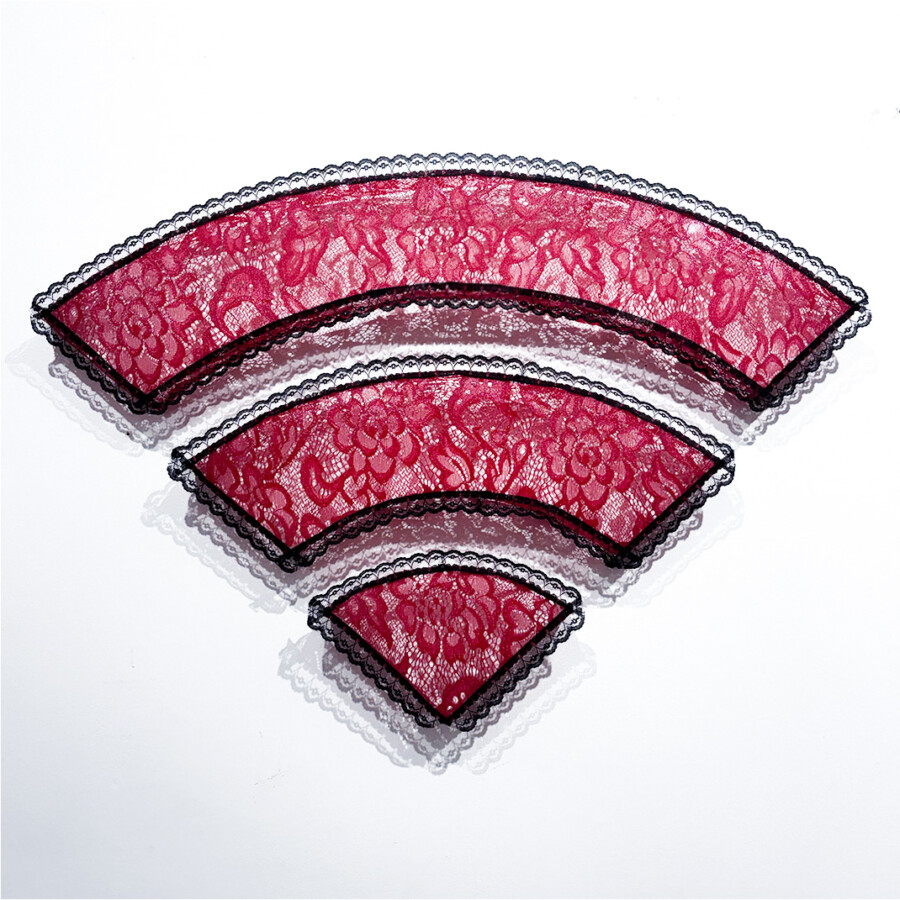

Noah Kashini: Garden of Earthly Delights
In “Garden of Earthly Delights,” Noah Kashiani recontextualises the chaotic excess of Hieronymus Bosch’s masterwork through a lens of modern cynicism. Hosted at Green Garnet Press, this exhibition curated by Christine Forni offers a sardonic commentary on contemporary indulgence, presenting a world where paradise and perdition are indistinguishable. These works invite viewers to confront a fractured landscape that is as hauntingly beautiful as it is unapologetically critical of our collective obsessions.
Featured work:
Personal Hotspot
33” x 24” x 2”
Lace, resin, thermoplastics